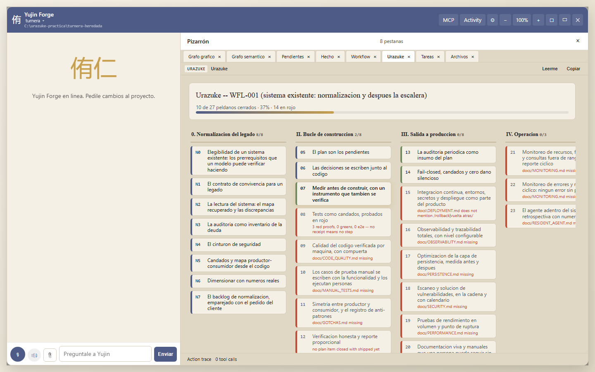
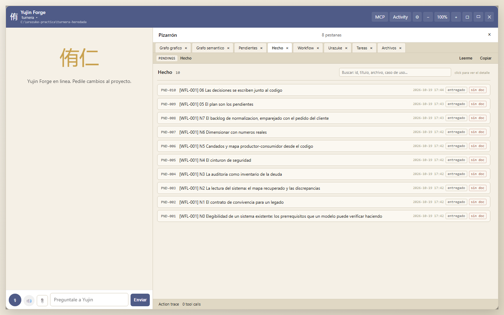
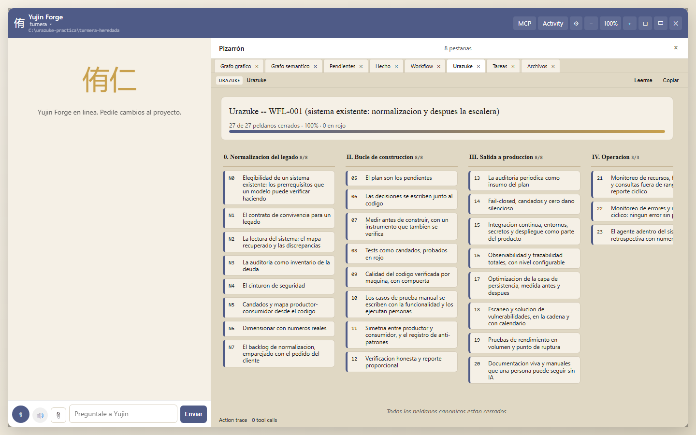

Paso a paso para principiantes, con capturas. Es la segunda práctica del 19 de octubre de 2026: Turnera heredada, una copia "de un conocido" de la agenda de turnos del consultorio, sin tests, sin cadena, sin documentación, con un defecto que la dueña sufre todos los días (a los pacientes que reprogramaron les llega el recordatorio cada día hasta el turno) y con un par de olores que nadie había mirado. El código no lo escribió el método; el método lo hereda.
Este manual da por leído el de proyecto nuevo: el panel, las pestañas, los recibos y el reporte honesto son los mismos. Acá se cuenta lo que cambia cuando el sistema ya existe: el camino N0 a N7 del método (el evolutivo-correctivo), cómo Forge lo elige solo, y cómo se corrige un defecto real con un rojo de verdad.
Tres cosas, y las tres las hace cumplir Forge:
Después de N7 el proyecto entra en el bucle normal, en el peldaño 5.
yf start --existing C:\urazuke-practica\turnera-heredada --no-launch(O el botón proyecto existente del arranque en un clic, y elegir la carpeta.) Forge mira la carpeta: tiene código y no tiene docs/WORKING_AGREEMENT.md, docs/SEMANTIC_TREE.md ni docs/GATES.md, así que le asigna el flujo WFL-001 (urazuke-legacy): las ocho estaciones N0 a N7 y después los peldaños 5 a 23, una tarea por cada uno, en orden.

En la práctica, la carpeta era una copia de Turnera con dos commits ("versión 1 del sistema de turnos", "arreglos varios y recordatorio a los reprogramados"), un README.md de tres líneas y un package.json sin tests. Nada más.
Al abrir el panel sobre esta copia, Forge le dio el mismo identificador que al proyecto original ("turnera", porque los dos package.json se llaman igual), y como "una carpeta = una entrada", movió el registro del original a la carpeta heredada y borró la entrada de la heredada. Los dos proyectos quedaron mezclados: la escalera de uno aparecía en el otro. Se corrigió en Forge el mismo día (el registro manda sobre el package.json), pero la regla queda: si tenés dos copias de un sistema, dales nombres distintos o un project_slug explícito en yujin.forge.json.
Cada estación tiene, como los peldaños, lo que verifica Forge y el prompt para pegar. En esta práctica las estaciones N0 a N6 las produjo una sesión del agente con el prompt de cada una, leyendo el código, sin tocarlo; N3 (la auditoría) la hizo la misma sesión, y el informe lo declara: el método prefiere un auditor aparte, y en el proyecto nuevo se hizo así.
El agente no pregunta si el sistema se puede levantar: lo levanta. Puso el servidor en un puerto libre con una base temporal, pidió GET /api/profesionales y pegó la respuesta (200, con su X-Request-Id), dio de alta un turno por la API (201) y cerró el proceso. Escribió docs/ELIGIBILITY.md con los siete prerrequisitos en verde o rojo y su evidencia, y docs/FUNCTIONALITY_RECOVERED.md: qué hace el sistema, pantalla por pantalla, desde el código, con marcas [código: archivo:línea] y [supuesto].
Forge verifica los dos archivos. Los rojos de N0 (no había tests ni cadena ni respaldo) se convierten en proyectos previos: acá, el cinturón de N4 y el respaldo del bloque 1.
docs/WORKING_AGREEMENT.md con las seis reglas más las cinco del legado. Forge busca, además, la rutina del rojo y la del reporte honesto: las va a exigir igual que en un proyecto nuevo.
PROJECT.md, docs/SEMANTIC_TREE.md, docs/STATUS.md y, lo más valioso, docs/DISCREPANCIES.md: 19 discrepancias entre lo que el código hace y lo que el negocio presumiblemente quiere, cada una como "el código hace X [archivo:línea]; el negocio dice Y; decisión: pendiente de la dueña". Entre ellas:
src/rules.js, con un comentario "los reprogramados tienen que recibir el aviso sí o sí, pedido de la dueña, mayo" que nadie podía confirmar).console.log y nadie lee.Ninguna se arregla acá. Se escriben, y la dueña decide una por una.
docs/AUDIT_2026-10-19.md: 20 hallazgos, cada uno con archivo y línea, riesgo, evidencia, prioridad y la marca de velocidad:
| Marca | Ejemplo en Turnera heredada |
|---|---|
| BLOQUEA | A-01: meses en producción sin una copia de seguridad, con la base abierta en modo WAL. |
| SE PAGA AL TOCAR | A-02/A-04: el marcado del recordatorio no es idempotente en la base. Se paga junto con R1, porque es el mismo módulo. |
| PUEDE ESPERAR | A-10: GET /api/turnos sin filtro devuelve la tabla entera (81 MB a 300.000 filas). |
Antes de cambiar una línea, 30 tests de caracterización (tests/caracterizacion.test.js) que capturan lo que el sistema hace hoy, defectos incluidos: hay un test que se llama "comportamiento actual: el reprogramado vuelve a recibir el aviso en cada corrida" y pasa en verde, porque eso es lo que el sistema hace. El rojo del cinturón se prueba por mutación: el agente plantó un defecto en src/rules.js (sacó la cláusula del reprogramado) y la batería lo atrapó con 2 tests en rojo; otro en src/store.js (sacó el sobreturno) y 1 en rojo; después lo revirtió. Más la cadena (.github/workflows/ci.yml), docs/GATES.md, docs/DEPLOYMENT.md y docs/ENVIRONMENTS_SURVEY.md. Forge verifica los documentos y que exista una definición de integración continua.
docs/CONSEQUENTIAL_ACTIONS_SURVEY.md (qué envía, borra o corre solo: acá solo el envío de recordatorios a un archivo), docs/LOCKS.md con un candado propuesto por acción y cuáles van ahora (restaurar el respaldo, preguntar quién lee el archivo de salida) y cuáles al tocar (modo de prueba, idempotencia en la base, límite diario), y docs/PRODUCER_CONSUMER_MAP.md.
No había base de producción: el agente lo dice, mide sobre una base de prueba sembrada con un medidor con test (scripts/meter-volumen.mjs: filas por tabla, filas por mes, las consultas más lentas con su plan) y marca todo como [base de prueba]. A 30.000 filas (el volumen de la dueña) las consultas usan índice y tardan menos de 0,2 ms; a 300.000 (el por diez), la única que se rompe es el GET sin filtro: 81 MB y 7,9 segundos bloqueado. docs/SIZING.md dice qué aguanta el por diez (SQLite) y qué no (ese endpoint, el contador en memoria, la falta de respaldo). El registro G9 se tomó en Forge con las cuatro opciones admisibles.
La dueña escribe su pedido en docs/blocks/BLOCK_01_REQUEST.md, con sus palabras ("a los pacientes que reprogramaron les llega el recordatorio todos los días hasta el turno"; "que no se reescriba el sistema"; "que no se toque la pantalla"). El agente arma la cola:
| Pendiente | Marca | Qué |
|---|---|---|
| PND-028 | BLOQUEA | Respaldo diario con VACUUM INTO y una restauración probada |
| PND-029 | CORRECTIVO | R1: al reprogramado le llega un solo recordatorio |
| PND-030 | SE PAGA AL TOCAR | El marcado es idempotente en la base (mismo módulo que R1) |
| PND-031 | CLARIFY | D-14: ¿quién lee el archivo de salida? (si alguien manda WhatsApp a mano desde ahí, pausar) |
Cada uno con criterios de aceptación, cómo se verifica y qué flujo toca. Forge verifica el pedido y que todos los pendientes abiertos tengan especificación. Desde acá, el bucle del peldaño 5 en adelante.
Acá está la diferencia con el primer bloque de un proyecto nuevo. El test nuevo (tests/recordatorio-reprogramado.test.js) dice lo que la dueña quiere: tres corridas seguidas, un solo aviso. Contra el código heredado, falla:
yf urazuke evidence run red_proof --pending PND-029 --step 8 --base-ref HEAD \
--test-file tests/recordatorio-reprogramado.test.js \
--command "npx vitest run tests/recordatorio-reprogramado.test.js -t PND-029"
recibo OK exit: 1 counts: 2 failed, 1 files failedDos tests en rojo contra la versión 90d53bb, la que tiene el defecto. Eso es un recibo: el comando, la versión, la cuenta y el código de salida, para que la dueña lo vuelva a correr. Lo mismo para la idempotencia (1 fallando) y para el respaldo (el script no existía).
Dos líneas en src/rules.js (la cláusula del reprogramado y su comentario) y una en src/store.js (WHERE reminder_sent_at IS NULL). El contador global se queda como está: no es parte del pedido (regla 7) y está anotado como deuda "se paga al tocar". Más scripts/backup.mjs con su test, que restaura la copia y cuenta los turnos: un respaldo que no se probó no es un respaldo.
Al corregir, dos tests del cinturón se pusieron en rojo: los que decían "comportamiento actual" para el aviso repetido y para el marcado no idempotente. Se cambiaron a la vista, en el mismo commit, con el nombre nuevo ("corregido en R1 (PND-029)") y el motivo en el comentario. El commit lo dice, el reporte honesto lo dice, y docs/GOTCHAS.md lo convierte en regla.
yf urazuke evidence run green --pending PND-029 --command "npx vitest run tests/recordatorio-reprogramado.test.js -t PND-029"
yf urazuke evidence run regression --pending PND-029 --command "npm test" # 41 tests
yf urazuke evidence run e2e --pending PND-029 --command "npx vitest run tests/recordatorio-reprogramado.test.js"El e2e, acá, es por la API real hasta el archivo de salida: el pedido no toca la pantalla (D-007), y el recibo lo anota.
yf pending close PND-029 --reason shipped --resolution "...": Forge arma el reporte honesto con los cuatro recibos. PND-031 (la aclaración) se cerró con --force-gate y su razón: solo documentación, no hay test que la ponga en rojo; la respuesta de la dueña quedó escrita en D-14 con fecha.

Después, los peldaños 9 a 12 como en el proyecto nuevo: yf urazuke quality init y check (8 archivos, 0 violaciones, trinquete), docs/MANUAL_TESTS.md con diez casos para la recepcionista, docs/GOTCHAS.md con cinco golpes, y los tres cierres con reporte honesto.
Los peldaños 13 a 23 son los mismos que en el proyecto nuevo, y los documentos se escriben igual; la diferencia es que acá describen un sistema que ya corre. La auditoría de N3 vale como la del peldaño 13 (Forge busca docs/AUDIT_*.md), y los hallazgos ya están en el plan. Lo que se midió, con su comando, está en docs/PERSISTENCE.md, docs/SECURITY_2026-10-19.md y docs/PERFORMANCE_2026-10-19.md del proyecto; el reporte cíclico y la retrospectiva se corren con yf urazuke cycle y yf urazuke retro.
Dos cosas de esta parte que vale la pena contar:
yf urazuke retro) dio: 3 rojos probados, 3 verdes, 3 regresiones, 2 de punta a punta, 0 recibos NOT OK, 1 override con razón, 27 de 27 cerrados.
Verificado: las ocho estaciones y los peldaños cerrados con sus artefactos en disco; tres rojos de comportamiento contra 90d53bb (2, 1 y 1 archivo); 41 tests en verde después del cambio; el respaldo restaurado por test; 0 violaciones de calidad.
Creído: que la cadena corre en GitHub (no hubo push); que listen sin host expone a la red local (es la semántica, no se probó desde otra máquina).
Puntos ciegos: la base y el archivo de salida reales, la máquina del consultorio, y quién leía el archivo antes (la dueña contestó: nadie; quedó en D-14). N3 la hizo la misma sesión que N2.
yf start --existing C:\urazuke-practica\turnera-heredada --no-launch # -> urazuke-legacy
yf urazuke status # N0..N7, 5..23
(N0..N6: una sesion del agente con el prompt de cada estacion; el codigo no cambia)
yf pending close PND-001 ... PND-007 --reason shipped --resolution "..."
yf pending add "[BLOQUEA] A-01: respaldo ..." --category infra --priority 5 --acceptance ... --how-verified ... --flow ...
yf pending add "[CORRECTIVO] R1: ..." --category bug ...
yf pending add "[SE PAGA AL TOCAR] A-02 y A-04: ..." --category bug ...
yf pending add "[CLARIFY] D-14: ..." --category clarify ...
yf pending close PND-008 PND-009 PND-010 # N7, 5, 6
yf urazuke evidence run red_proof --pending PND-029 --base-ref HEAD --test-file tests/recordatorio-reprogramado.test.js --command "..."
(idem PND-030, PND-028; cambio minimo; green, regression, e2e)
yf pending close PND-028 PND-029 PND-030 --reason shipped --resolution "..."
yf pending close PND-031 --reason shipped --force-gate "solo documentacion ..."
yf pending close PND-011 PND-012 # 7, 8
yf urazuke quality init && yf urazuke quality check # 9
yf pending close PND-013 ... PND-016 # 9, 10, 11, 12
(13 a 23: documentos, yf urazuke cycle, yf urazuke retro, cierres)La evidencia completa está en docs/practica/evidencia/turnera-heredada/ del repositorio del método.